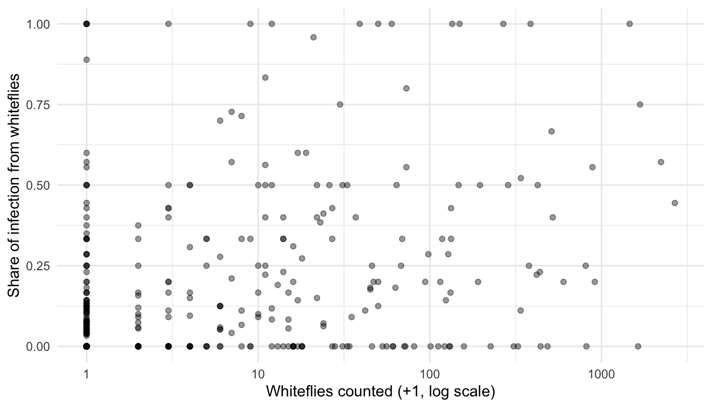

2 + 3[1] 5How much disease is there, and where did it come from?
Cassava mosaic disease is caused by viruses that turn cassava leaves into a yellow-green patchwork and stunt the plant. It reaches a field in two ways:
In 2015 and 2017, researchers from the Central and West African Virus Epidemiology (WAVE) programme’s hub at Covenant University walked 512 cassava fields across 13 states in South-West and North-Central Nigeria and recorded what they saw. Their data are free for anyone to use. Today we use them to answer two questions: how much disease was there, and where did it come from?
If you have never used R, start here. Type each line into the console and press Enter.
R is a calculator:
You can store a result under a name with <-, and use the name later:
A function does a job. You give it something in brackets, and it gives an answer back:
[1] 14[1] 20A table of data is called a data frame. Each row is one thing (here, one field) and each column is one measurement. You will meet one in a moment.
Packages add extra tools. You install them once (see Get set up), and switch them on each session with library().
That is all you need for today.
[1] 512 [1] "Year" "Field" "Country"
[4] "State" "Altitude" "Mean_CMD_Severity"
[7] "CMD_Incidence" "Cutting_Infection" "Whitefly_Infection"
[10] "Total_whitefly" Each row is one field. The columns we need:
| Column | What it means |
|---|---|
Year |
2015 or 2017 |
State |
the state the field is in |
CMD_Incidence |
the share of plants in the field showing symptoms, from 0 to 1 |
Mean_CMD_Severity |
how bad the symptoms were, on a 1 to 5 scale, averaged over the diseased plants |
Cutting_Infection |
the share of the infection that came in with the planting material |
Whitefly_Infection |
the share that was carried in by whiteflies |
Total_whitefly |
how many whiteflies were counted in the field |
These two words get mixed up all the time, so it is worth being precise:
A field can have high incidence and low severity (many plants, mild symptoms), or the reverse. You need both to describe an outbreak.
Cassava mosaic severity is scored on a 1 to 5 scale, from 1 (no symptoms) to 5 (severe mosaic, distorted leaves and a stunted plant). The numbers are ordered categories, not measurements: a score of 4 is worse than a 2, but it is not “twice as bad”. Keep that in mind whenever you average scores like these.
# A tibble: 2 × 4
Year fields mean_incidence mean_severity
<dbl> <int> <dbl> <dbl>
1 2015 184 0.438 2.73
2 2017 328 0.122 2.15In 2015, on average 44% of plants in a field showed symptoms. By 2017 that had fallen to about 12%.
A picture shows the spread across fields, not just the average:
The route of infection is only recorded for fields that had some disease, so we keep just those:
[1] 360 Min. 1st Qu. Median Mean 3rd Qu. Max.
0.0000 0.7088 0.9091 0.8070 1.0000 1.0000 The median field got about 91% of its infection from the planting material. Let us count how many fields got at least half of it that way, and how many got more than half:
# A tibble: 1 × 3
fields at_least_half more_than_half
<int> <dbl> <dbl>
1 360 0.9 0.85In nine out of ten diseased fields, at least half of the disease was planted, not caught, and in 85% it was more than half. Notice how much the wording matters: “at least half” and “more than half” give different numbers, because 18 fields sit at exactly 50%. That changes what a farmer should do: the first defence is clean planting material, not spraying for whiteflies.
Which state had the highest average incidence in 2017?
# A tibble: 13 × 3
State mean_incidence fields
<chr> <dbl> <int>
1 Benue 0.264 34
2 Lagos 0.207 9
3 Niger 0.2 13
4 Ogun 0.181 36
5 FCT 0.167 2
6 Nassarawa 0.119 30
7 Ekiti 0.103 20
8 Oyo 0.0913 50
9 Ondo 0.0846 39
10 Kwara 0.0817 20
11 Kogi 0.0667 32
12 Plateau 0.0606 11
13 Osun 0.0604 32Check the fields column too: an average from three fields is much less reliable than one from fifty.
Do fields with more whiteflies get more of their infection from whiteflies? Make a plot of Total_whitefly against Whitefly_Infection for the diseased fields.

[1] 0.2969913There is a link, but a loose one. The whitefly count is one visit on one day, while the symptoms record the whole season. A single count is a snapshot of something that keeps changing.